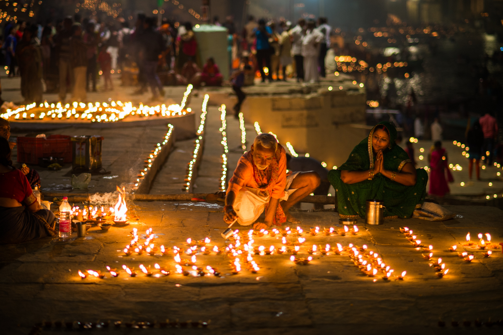
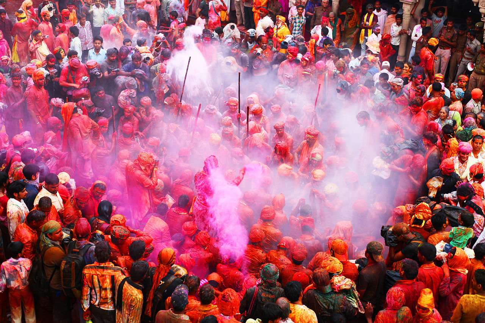
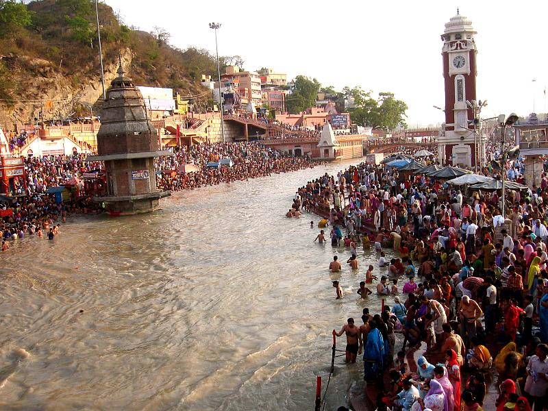
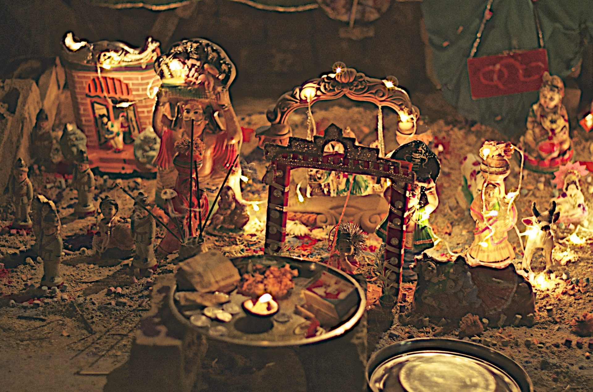

 Deepavali, or Diwali, is one of the most popular festivals in India. Northern India, especially Uttar Pradesh, celebrates this occasion with a lot of pomp and gaiety. The festival of lights, Diwali, is a gala affair that is a celebration of devotion and joy in houses across the nation. Uttar Pradesh puts in a lot of thought while celebrating this jolly tradition. It seems like the entire state lights up from within with diyas and other fancy lights. Every street and house receives a makeover during this particular time of the year. Goddess Lakshmi and Lord Ganesh are the honorary idols of this festival.  Holi is a colorful festival popular in most parts of the country, and Uttar Pradesh also observes the festival of Holi with a lot of enthusiasm. Barsana Holi, on the other hand, is an innovative style of celebrating Holi, particularly in the small town of Barsana of Uttar Pradesh. Barsana is the birthplace of Radha, the beloved of Lord Krishna, and is in the district of Mathura. The distinctive quality of this festival is the mock fight that the women of Barsana engage in with the men of Nandgaon, a neighboring town. The men of Nandgaon come to take over the Shri Radhikaji Temple of Barsana. The women of Barsana try to stop them with bamboo sticks, and the men cannot strike the women with anything other than colors. The men who are made to dress up in women’s clothes and dance in front of everybody. All of these take place in the right, happy spirit. Throughout the festival, songs of conversation between Krishna and Radha are a must. The Barsana Holi is a jolly representation of the treatment of Lord Krishna from the hands of the adoring Gopias. The festival is also known as Lathmar Holi. This festival is primitive to Uttar Pradesh.  Ganga is the most respected and Holy River of India. The Hindus have a deep connection with the river, and they celebrate its pious existence with many festivals and holy dips in the water. Ganga Dussehra is a festival of Uttar Pradesh that marks the descent of Maa Ganga on earth. The festivity takes place on the tenth day of the Jyeshta month of the Hindu calendar. According to the English calendar, it takes place in June and continues for ten days. Devotees flock to the riverside and offer their homage. The river towns of Uttar Pradesh, like Varanasi and Prayag, celebrate this festival with a lot of color and pomp.  The birth of Shri Krishna is a very grand affair for the people of the Hindu community. Mathura and Vrindavan, the holy land of Sri Krishna, is in present-day Uttar Pradesh. It is, therefore, inevitable that Uttar Pradesh celebrates the festival of Janmashtami with extra zing and enthusiasm. The state engages in a lot of holy rituals to commemorate Shri Krishna’s birth. The land and its people celebrate the happy event with many activities, recitals of Lord Krishna’s numerous tales, and even sports. Dahi Handi is an indigenous sport or entertainment that is ubiquitously in association with the festival of Janmashtami. All the people of a colony come together to take part in this event of breaking the Dahi Handi, a clay pot with yogurt that hangs from a string up in the air. Young boys form a human pyramid and climb to the top to break the pot. Meanwhile, the onlookers throw colors at the participants. This is an enjoyable activity that one must witness at least once. People of Uttar Pradesh pay more attention to ensuring such activities take place smoothly and with a lot of delight during Janmashtami. Uttar Pradesh is a state that has a long history of significant events in India. These festivals, and much more, mark the unity and upholding of the traditions over such a long period. Pilgrims flock to the state during special fairs and festivals. Those of you who like to enjoy festivals and learn about the rich culture and traditions of the country do visit Uttar Pradesh during such occasions. We are sure you will have happy experiences and memories that will stay with you for a long time.